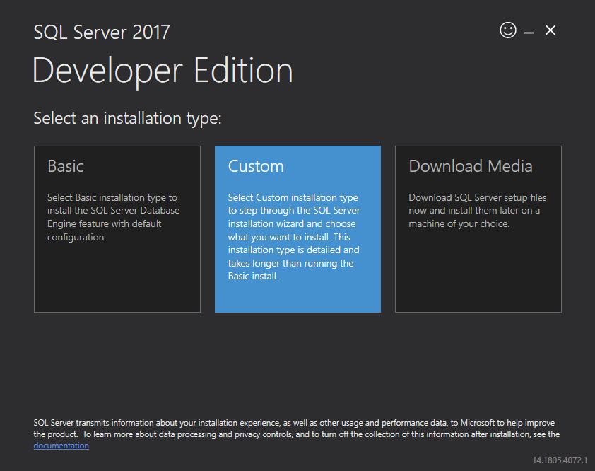
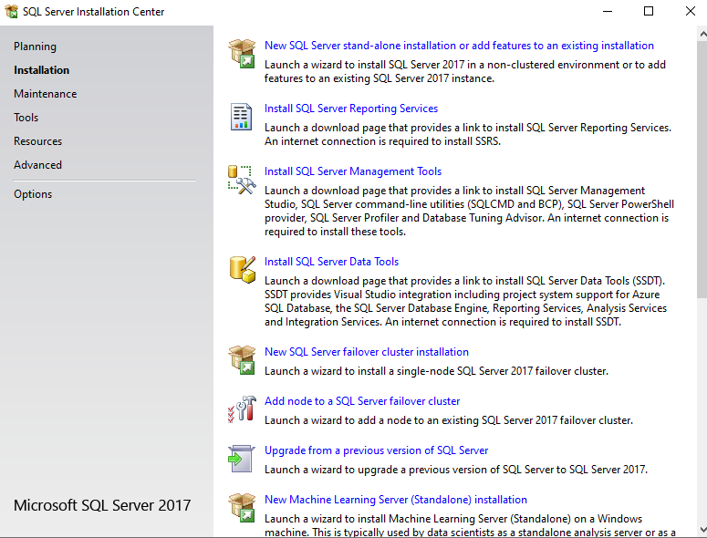
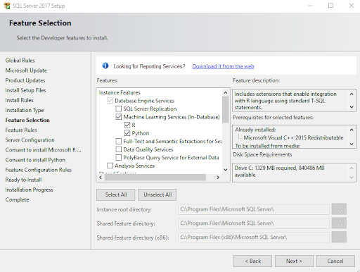
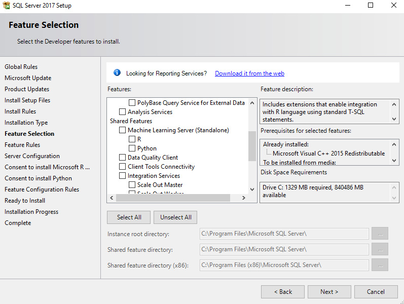
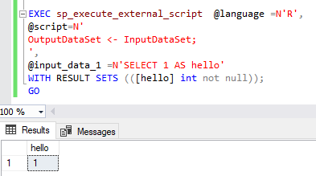
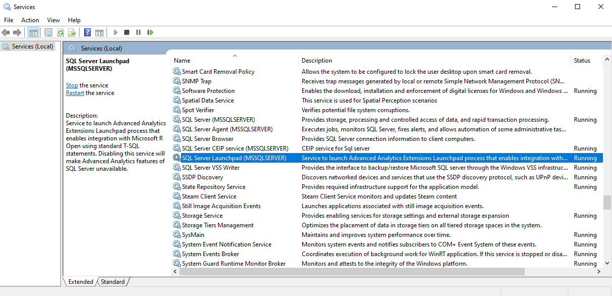

SQL SERVER
MACHINE LEARNING
SERVICES
Tyler Bradley
Agenda
- Background
- Demos
- Tips and Tricks
Background
What is this?
- SQL Server feature to bring analytics into the database
- R (2016) and Python (2017)
- Not a standalone server (there is another option for that)
Use cases
- Forecasting next month’s revenue
- Customer churn
- Finding potential fraud
- Basically, anything that is a best guess or probability
Why would you want this?
- Speed up predictive model processing
- The analysis has been brought to the data instead of bringing the data to the analysis
- Utilizes SQL for data prep and R/Python for analysis
- Outputs directly into SQL Server
Why would you want this?
- Clean up analytics projects in production
- Use stored procedures, jobs, and other SQL objects
- Less data pipeline work
- Variety of setups but can be standardized across a team/organization
Why would you want this?
- Ease collaboration between data scientists and DBAs
- Utilized SQL permissions
- Microsoft approved security
- Options for resource controls
Why would you NOT want this?
- ‘Real-time’ analysis is too slow
- Big data operations are too small
- Power BI (and other software) interfaces
Planning
- Roles - DBA/Data Engineer to Data Scientist/Analyst
- Use cases
- Number of People
Demos
Install


Install
 
 
Install
A few more options and restarts later…

sp_execute_external_script
- This is the main function for using an external language (R/Python)
- Main parameters are:
- Language
- Script
- Input data
- Output data
- (Other parameters too)
!!!!DISCLAIMER!!!!
There will be code that creates predictive models here. It is cheating. DO NOT FOLLOW IT. It does not cover choosing a model, testing/validation sets, and checking model assumptions.
The SQL objects and functions are totally fine and can be used.
Model: SQL Server / R Demo
Native Scoring
- This doesn’t use the overhead of R/Python by saving the models in ONNX or a predefined binary format.
- There is a list of possible models defined in specific functions. (rx…)
- RevoScaleR
- revoscalepy
- Uses the PREDICT function
Native Scoring Demo
R Package
- Standard way of wrapping up R models
- Provides more separation between R and SQL
- Change packages to change models
- Use ALTER statement to update package
- Cleanest route for when a lot of R code needs to be ran
R Package
- There are some small details
- Sys.setenv(R_DEFAULT_SAVE_VERSION = 2) (if SQL < 3.5 but package isn’t)
- Sys.setenv(R_DEFAULT_SERIALIZE_VERSION = 2) (if SQL < 3.5 but package isn’t)
- devtools::build(binary = TRUE) (SQL Server wants zip)
R Package Demo
Speed Comparison Demo
Tips and Tricks
Tips and Tricks
- Small catches will be the most painful part
- R/Python are case sensitive. So the input data names have to match
- Input/output formats are troublesome
- Error messaging can be cloudy at best
- There is a whole world of versioning
- Upgrading Machine Learning Services
- miniCran/R Open/checkpoint package
- Dependencies
Tips and Tricks
- Documentation/Blogs are hit-or-miss
- Azure Data Science VM (other sandboxes)
- Use all the standard SQL objects/tools
- Wrap everything in a stored procedure
- Save/update models in a temporal table
- Separate database or bundled by project
Tips and Tricks
- Write documentation as you go. Then delete and restart following the documentation
- Script everything
- sqlmlutils package for R users
- Standard SQL for SQL users
Tips and Tricks
- Restarting the Launchpad
